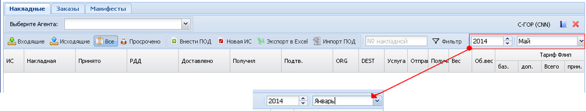
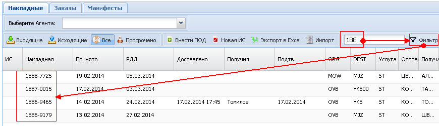
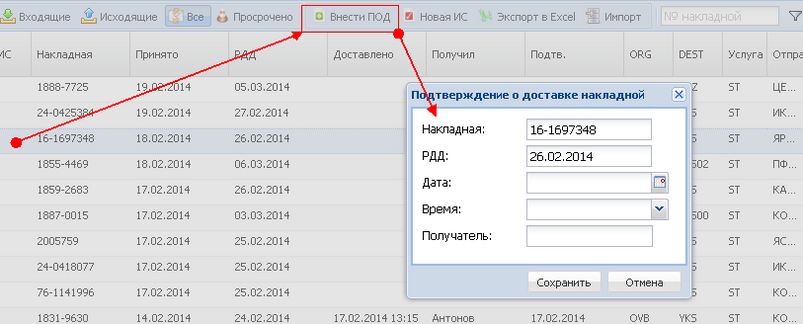
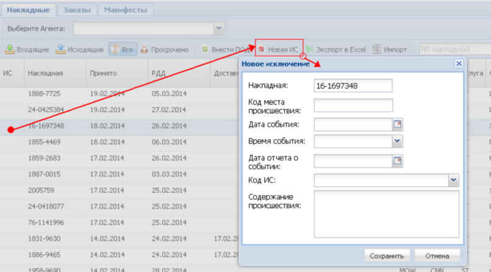
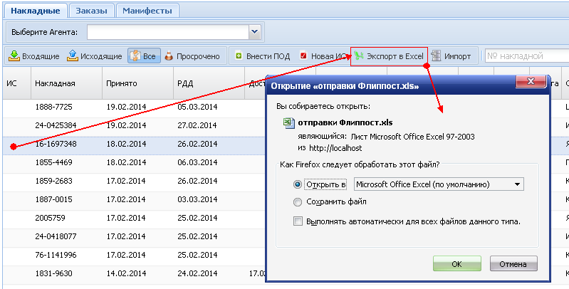
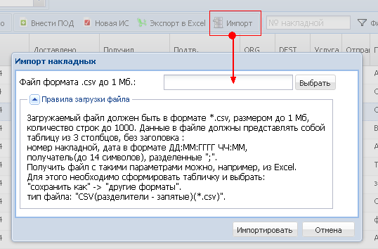

Накладные |
Вверх Назад Вперед |
|
Для просмотра накладных необходимо указать временной интервал: 
При просмотре, можно выбрать "Входящие", "Исходящие", "Просрочено" или "Все" накладные. Для удобного просмотра списка накладных можно воспользоваться фильтром. Для этого в поле ввода необходимо внести часть номера накладной и нажать кнопку "Фильтр". 
Для ввода подтверждения доставки, необходимо выделить накладную, нажать кнопку "внести ПОД". В открывшемся окне указать необходимую информацию. 
Для ввода исключения, необходимо выделить накладную, нажать кнопку "новая ИС". В открывшемся окне указать необходимую информацию. 
Для Экспорта в "Excel", необходимо выделить накладную, нажать кнопку " Экспорт в Excel". 
Для импорта подтверждений о доставке накладных в систему, необходимо нажать кнопку "Импорт". Далее, выбрать нужный файл .csv, сформированный в соответствии с указанными условиями и нажать кнопку "Импортировать".

|